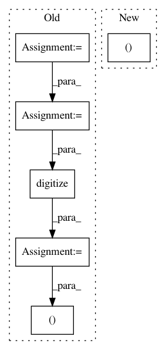

8c430e84863f1a1f7492206ea399215b75a7c4cd,lib/matplotlib/projections/polar.py,PolarAxes,get_yaxis_text1_transform,#PolarAxes#Any#,657
Before Change
else:
angle = np.rad2deg(thetamin)
if angle < 0:
angle += 360
angle %= 360
// NOTE: Due to a bug, previous code always used bottom left, contrary
// to its original intentions here.
valign = [["top", "bottom", "bottom", "top"],
// ["bottom", "bottom", "top", "top"]]
["bottom", "bottom", "bottom", "bottom"]]
halign = [["left", "left", "right", "right"],
// ["left", "right", "right", "left"]]
["left", "left", "left", "left"]]
ind = np.digitize([angle], np.arange(0, 361, 90))[0] - 1
return self._yaxis_text_transform, valign[full][ind], halign[full][ind]
def get_yaxis_text2_transform(self, pad):
thetamin, thetamax = self._realViewLim.intervalx
After Change
if self.get_theta_direction() > 0 or full:
return self._yaxis_text_transform, "center", "left"
else:
return self._yaxis_text_transform, "center", "right"
def get_yaxis_text2_transform(self, pad):
if self.get_theta_direction() > 0:
In pattern: SUPERPATTERN
Frequency: 3
Non-data size: 6
Instances
Project Name: matplotlib/matplotlib
Commit Name: 8c430e84863f1a1f7492206ea399215b75a7c4cd
Time: 2017-09-25
Author: quantum.analyst@gmail.com
File Name: lib/matplotlib/projections/polar.py
Class Name: PolarAxes
Method Name: get_yaxis_text1_transform
Project Name: pymc-devs/pymc3
Commit Name: ec7dfae5e05fd8d37b86e639957d4f71a24928b2
Time: 2017-11-21
Author: aloctavodia@gmail.com
File Name: pymc3/plots/kdeplot.py
Class Name:
Method Name: fast_kde
Project Name: matplotlib/matplotlib
Commit Name: 6889c6dbf8511382250bea9a5a36ceb0e1912f01
Time: 2017-09-25
Author: tcaswell@gmail.com
File Name: lib/matplotlib/projections/polar.py
Class Name: PolarAxes
Method Name: get_yaxis_text1_transform